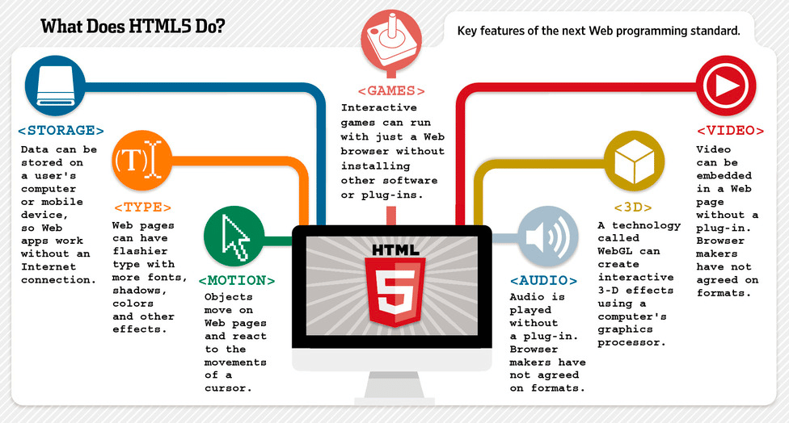

HTML5: Revolutionizing the Web
The Evolution of Web Standards
Overview of HTML5 Enhancements
HTML5 represented a major leap forward, introducing cleaner, more semantic code and powerful features tailored for today's multimedia and app-driven internet. It has become essential for responsive and secure web development.
- Semantic Elements: Tags like
<article>,<section>,<header>, and<footer>help structure content more meaningfully. - Multimedia Support: Built-in
<video>and<audio>tags eliminate the need for plugins like Flash. - Offline Capabilities: The Application Cache and Service Workers allow sites to load without internet access.
- Cross-Device Compatibility: HTML5 was built with mobile and tablet compatibility in mind.
- Security Improvements: Sandboxing and secure API support help prevent malicious behavior in iframes and forms.

HTML5 introduced multimedia, gaming, video, and interactive features without plugins.